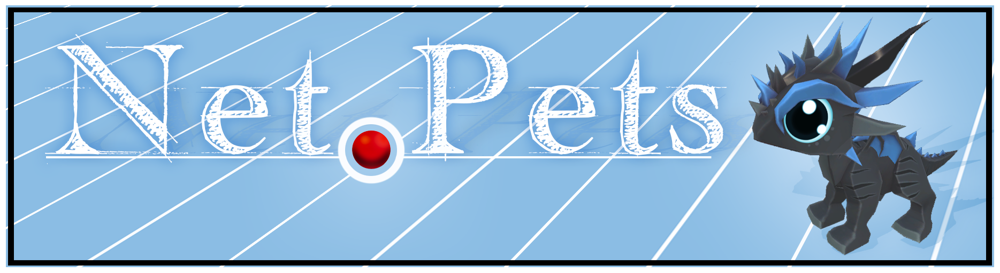

Net Pets

Can human connection extend to artificial lifeforms, as humans do with their pets?
Net Pets tries to answer that question. Net Pets is a mythical creature pet simulator where you, the trainer, can influence Neural Network-based algorithms to interact with you and their environment. Train them to play fetch or train them to battle, but can you associate and connect with them? Like a Turing test or Ex-Machina, is it fooling you or is the connection real? So here lies the question, can humans connect with artificial intelligence?
In Net Pets, the player has the power to train neural networks to play, compete, and interact with each other. From the beginning, your Net Pet is like a baby and it's up to you to teach it and help it grow to interact with its world. Like a dog, give them rewards or punishments to adjust its behavior to that of your liking, I just hope your liking is for the better.
The Net Pet game provides the environments and curriculums to train your creatures, but your creatures will only succeed if you influence them well. Each curriculum will change your pet's brain in a way that is irreversible, but if done right can lead to new and interesting behavior. Every creature is different, so what will your pet learn?
The visual aspect of Net Pets can be summed up as friendly and welcoming. As Virtual Reality provides virtual worlds, it is only natural that our virtual creatures be out of this world, familiar but new. As these creatures live their lives, they grow, change, and evolve. A creature may start as a baby but grow into a huge dragon that is yours to train, play, and compete with.